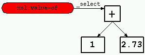
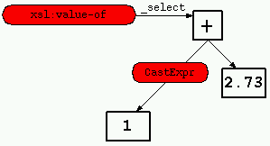

|
| | |
The input stylesheet is parsed using the SAX 1-based parser from Sun's
Project X:
com.sun.xml.parser.Parser
This parser builds a DOM from the stylesheet document, and hands this
DOM over to the compiler. The compiler uses its own specialised parser to
parse XPath expressions and patterns:
com.sun.xslt.compiler.XPathParser
Both parsers are encapsulated in XSLTC's parser class:
com.sun.xslt.compiler.Parser
|
 | | | | Type-check and Cast Expressions | | | | |
| | |
In many cases we will need to typecast the top node in the expression
sub-tree to suit the expected result-type of the expression, or to typecast
child nodes to suit the allowed types for the various operators in the
expression. This is done by calling 'typeCheck()' on the root-node in the
XSL tree. Each SyntaxTree node is responsible for its own type checking
(ie. the typeCheck() method must be overridden). Let us say that
our pattern was:
<xsl:value-of select="1+2.73"/>

Figure 3: XPath expression type conflict
The number 1 is an integer, and the number 2.73 is a real number, so the
1 has to be promoted to a real. This is done ny inserting a new node between
the [1] and the [+]. This node will convert the 1 to a real number:

Figure 4: Type casting
The inserted node is an object of the class CastExpr. The SymbolTable
that was instanciated in (1) is used to determine what casts are needed for
the various operators and what return types the various expressions will
have.
|
| | |
A general rule is that all classes that represent elements in the XSL
tree/document, i.e., classes that inherit from SyntaxTreeNode, output
bytecode in the 'translate()' method.
|
|
|